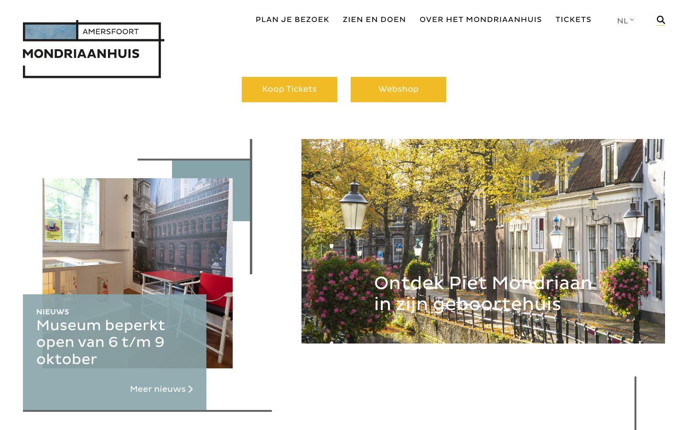

References / Website / 260
Mondriaanhuis website
The museum in Mondrian’s birthplace in Amersfoort frames its photographs with offset black lines and uses flat yellow buttons and gray-blue planes.
- Source
- mondriaanhuis.nl
- Creator
- Mondriaanhuis
- Style
- De Stijl (agent-proposed, not yet reviewed by a person)
- Moods
- Quiet, orthogonal, institutional
- Evidence
- Captured with
tools/capture.mjs(headless Chrome, 1440 × 900) on 28 September 2026 and inspected. The screenshot shows the first viewport; the measurement covers up to four screens. The request redirected to the Dutch home page, https://www.mondriaanhuis.nl/nl/. - Reviewed
- Rights
- Third-party work, stored with credit for commentary. License: unverified. Rights policy
Observed
- The logo is a rectangle of black lines that overlap and extend past their corners, with a small gray-blue plane and the words AMERSFOORT and MONDRIAANHUIS in capitals.
- The navigation is set in small letter-spaced capitals: PLAN JE BEZOEK, ZIEN EN DOEN, OVER HET MONDRIAANHUIS, TICKETS.
- Two flat yellow buttons with square corners read “Koop Tickets” and “Webshop”.
- A news panel in gray-blue overlaps a photograph of a museum room; thin dark lines run along and past the edges of the photographs.
- A large photograph shows a canal street in Amersfoort with the text “Ontdek Piet Mondriaan in zijn geboortehuis”.
Why it belongs
The site quotes the style through lines that run past their corners, as in Mondrian’s paintings, and through flat yellow, but it is mostly a photograph-led museum site.
Measured: 3 px median border, 3 hues, 0.24 uppercase share, and no rounded corners; the chromatic share is 0.04 because photographs and white dominate.
Borrow
Frame an image or a logo with black lines that overshoot the corners instead of a closed box.
Measured
Machine-extracted by tools/extract-traits.js on . Full measurement.
- Type families
- Pluto Sans (100%)
- Type scale ratio
- 1.27
- Median radius
- 0 px
- Mean chroma
- 0.05
- Palette
- #ffffff 72%
- #000000 10%
- #87a4aa 9%
- #fdf7e7 4%
- #f0bb25 2%
- #b7242e 1%
- #666666 1%
- #a27b89 1%

